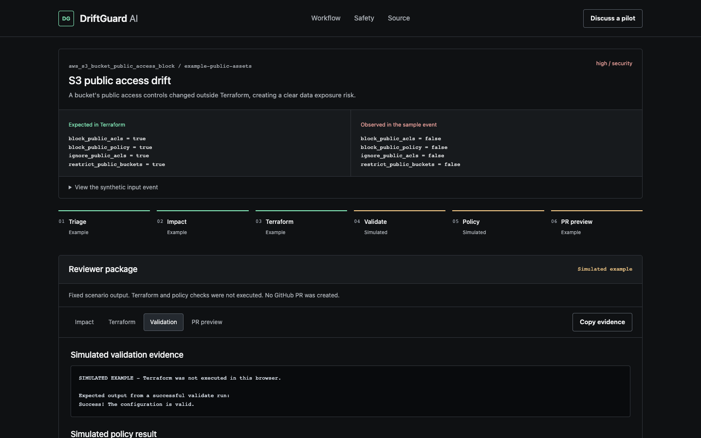

For AWS platform & cloud security teams
Turn risky AWS drift into
review-ready Terraform PRs.
DriftGuard takes AWS drift events, drafts the Terraform fix, validates it in a sandbox, and packages the risk context your team needs before opening a GitHub PR.
- Dry-run first
- Validation before PR
- No auto-apply
See the reviewer package
A fix you can inspect. Evidence you can question.

Actual demo interface, using the fixed S3 example. Browser checks are simulated. A configured Lambda endpoint runs real Terraform validation; neither mode applies infrastructure.
From alert to review
Close the gap between
"something changed" and a fix.
An alert still leaves someone comparing AWS with Terraform, drafting HCL, and explaining the risk in a PR. DriftGuard packages that work into a repeatable review flow.
- 01
Start with the drift
Provide an event or issue description. The agent triages it and adds security and estimated cost context.
- 02
Draft, validate, correct
The agent proposes HCL and runs Terraform validation. Failed validation or built-in policy checks feed a bounded correction loop.
- 03
Review the proposed change
Inspect a dry-run preview or a GitHub PR. Your team reconciles it with the existing configuration, reviews a plan in CI, and decides whether to merge.
Three places to start
Security exposure. Unexpected capacity. The same review flow.
The demo uses fixed examples, not a connection to your AWS account. Choose a scenario and inspect the proposed outcome.
Public access enabled
Public access controls drift from the private baseline. See explicit Terraform controls and the data exposure context.
Explore S3 drift EC2 / NetworkSSH open to the internet
An admin rule changes to 0.0.0.0/0. Review a proposed return to the approved administrative CIDR.
Explore network drift RDS / CostDatabase resized outside IaC
A larger instance class appears outside Terraform. Review the capacity change, cost assumptions, and rollback caveats.
Explore RDS driftDesigned around human review
Validation is evidence.
Approval is your decision.
The product prepares a proposed fix. It does not prove that applying the fix is safe for your environment.
- Nothing gets applied
- The code has no Terraform apply path. Public demo requests also disable GitHub writes.
- Checks have a clear scope
- Terraform validate checks configuration validity. Small built-in checks catch selected unsafe patterns; neither replaces a plan, your policy scanner, or code review.
- Demo data stays synthetic
- Browser simulation runs locally. With a backend configured, only the selected fixed scenario is submitted; compact run records may be retained for 30 days.
- Live agent data needs care
- Real LLM runs send redacted prompt content to OpenAI or Anthropic. Pattern-based redaction is not comprehensive DLP. Cost summaries are estimates, not billing calculations.
Why a dedicated workflow?
The value is in the work
between the prompt and the PR.
ChatGPT
Useful for drafting HCL. DriftGuard also runs validation, feeds failures back into a correction loop, and packages the PR. Generated code still needs review.
Spreadsheets
Useful for tracking findings. DriftGuard produces a proposed code change and check evidence alongside the issue's impact.
Zapier / n8n
Can orchestrate this too, with custom steps. DriftGuard provides the Terraform correction loop and PR gates as a focused implementation.
Manual investigation
Still essential for unfamiliar drift. For repeated cases, a consistent draft and reviewer package can reduce repeated setup and explanation work.
A focused pilot
One drift class.
One sandbox. One reviewer.
Start by agreeing on the drift, the expected Terraform baseline, and what the reviewer needs to decide. Evaluate a dry run before enabling any supervised GitHub writes.
Opens a public GitHub issue draft. Sign-in is required; nothing is submitted until you publish it. Keep credentials and production details out of the inquiry. Follow-up happens in the issue. Self-serve signup and billing are not available.
Before you connect anything
A few practical questions.
Who is DriftGuard for?
AWS platform and cloud security engineers using Terraform and GitHub. The strongest fit is a team with recurring drift and an existing infrastructure review process.
Does the demo run a real AI agent?
The three scenarios use fixed responses. Browser mode simulates checks. If the optional Lambda endpoint is configured, it runs the LangGraph workflow with mock LLM responses and real Terraform validation. Live CLI runs can use OpenAI or Anthropic.
What setup is required for a pilot?
The online demo needs no keys. Real agent runs need Python, Terraform, an approved LLM model and API key, and scoped GitHub access if PR creation is enabled. The proposed file must be reconciled with your existing Terraform and state.
Does it discover drift across my AWS accounts?
No hosted discovery is provided today. The agent accepts a supplied event or issue description. The public demo only accepts its three fixed scenarios.
What happens if validation fails?
The agent can retry within a configured correction limit. Persistent failures block PR creation. The demo displays blocked results and returned errors; a failed backend request never becomes a simulated success without your choice.
What is still missing for a paid rollout?
Tenant authentication, private onboarding, production event ingestion, repository-aware patches, broader policy coverage, customer-accessible audit history, and billing. The current scope is a supervised evaluation.